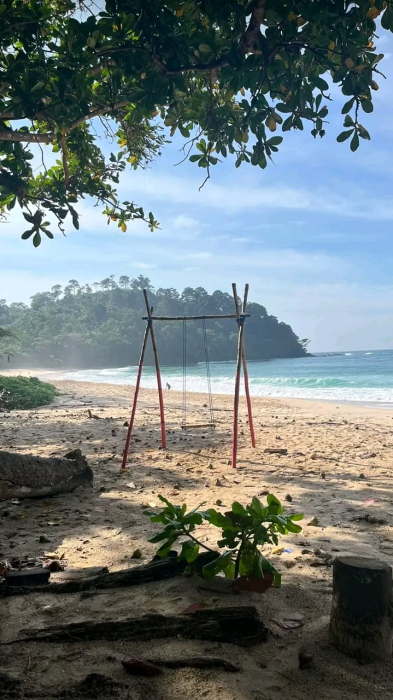
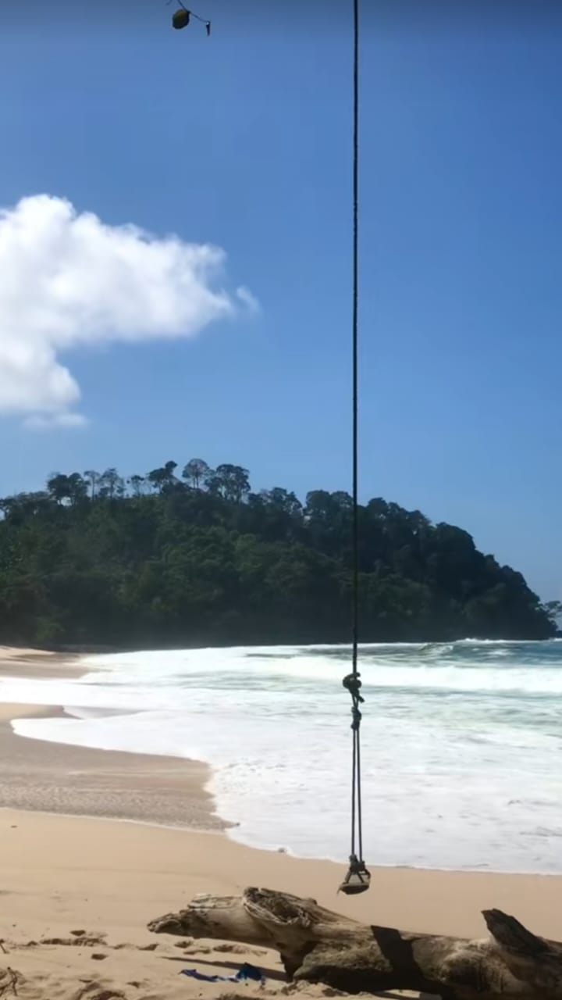
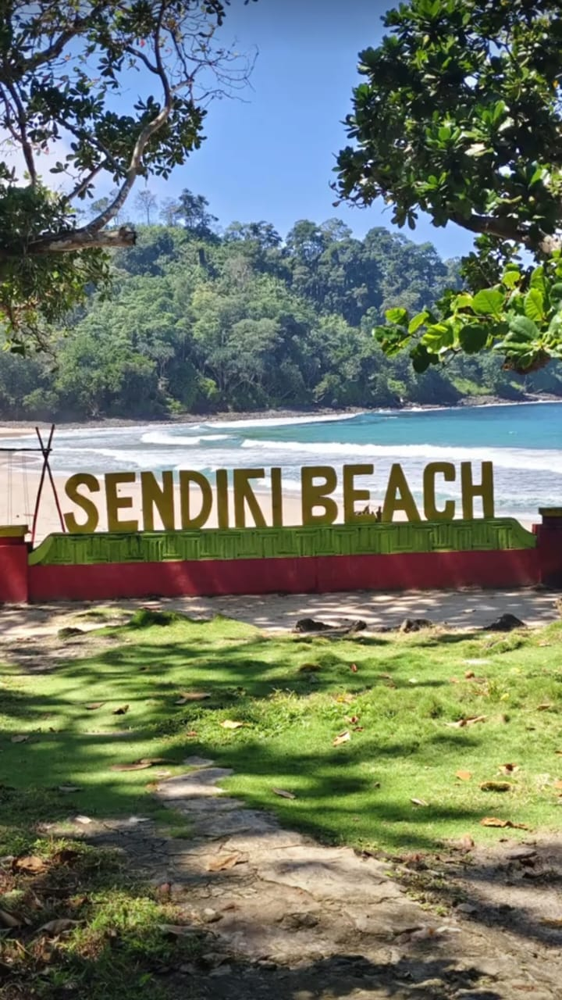
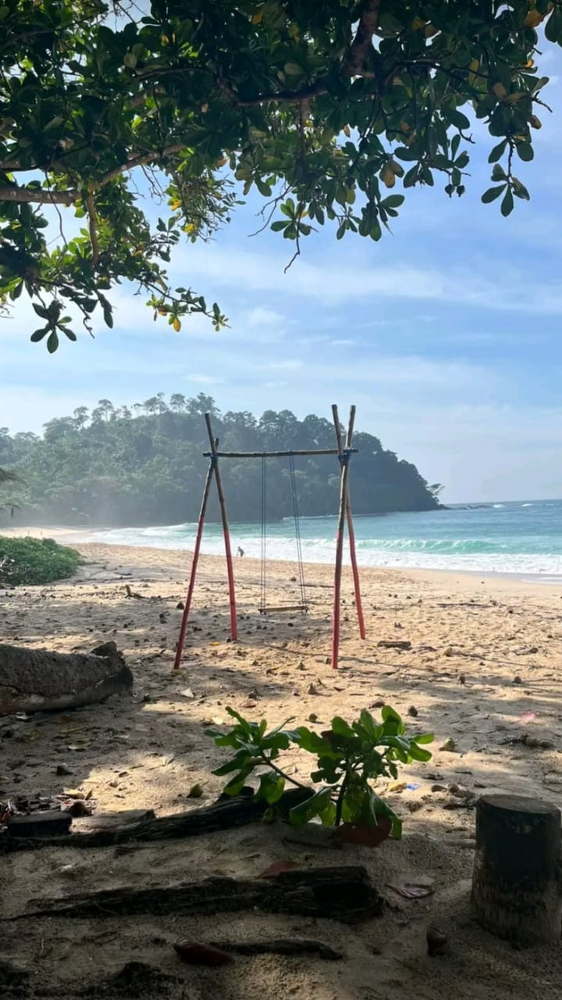
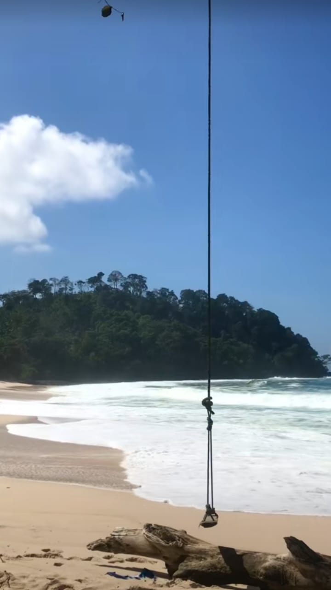
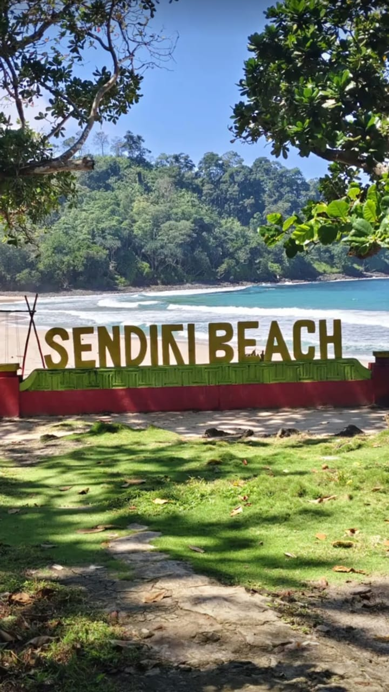

𓇼 Pantai yang terletak di daerah Tambakrejo, Sumbermanjing
Wetan, Malang, Jawa Timur. Dengan
jarak sekitar 60 kilometer
dari pusat Kota Malang dan menumpuh waktu sekitar 2 jam.
Tidak disarankan untuk menggunakan elf/hiace karena akses
menuju lokasi masih sulit untuk di lalui. Tiket masuk ke pantai
Sendiki segharga Rp 5.000 per orang. Jam buka Pantai Sendiki
yaitu setiap
hari dan tanpa batas waktu.
𖦹 Pasir putih dan birunya laut dengan suasana pantai
sangat
cocok dinikmati waktu libur dan menghilangkan penat. Di sana kamu
bisa bermain pasir di area bibir pantai dan bermain air.
Pantai Sendiki juga dikelilingi banyak pepohonan yang rindang dan
sejuk. Namun pantai ini berbatasan langsung dengan Samudera Hindia,
jadi Pantai Sendiki memiliki ombak yang cukup ganas dan diimbau untuk
para pengunjung agar tidak berenang terlalu jauh.
🌴 Fasilitas di pantai ini cukup memadai, tersedia toilet,
warung makan, area berkemah, musala, dan terdapat ayunan bambu.
🗫 contact : 08133318338
instagram : @pantaisendiki